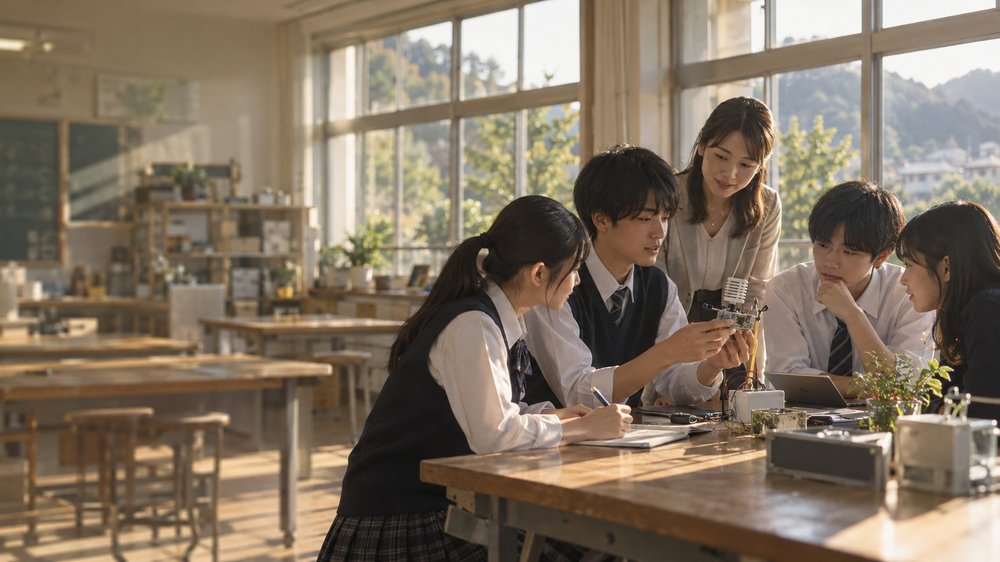
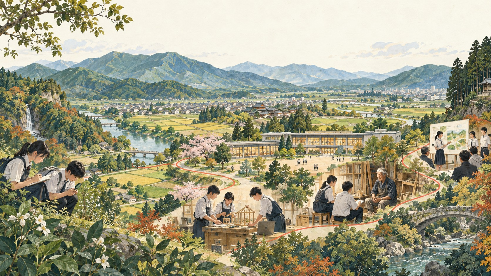

学校を知る
高校との継続的な接点
修学旅行等を通じた関係性を生かし、教育目標・年間行事・校務に合う実行計画をつくります。

CONCEPT VISUAL / AI生成イメージJTB × TOCHIGI · NEXT HIGH SCHOOL
栃木県教育委員会・採択校の皆さまへ
「やってみたい」が、地域を動かす力になる。
学校と社会をつなぎ、一人ひとりの可能性に
寄り添う学びを、ともに育てます。
とちぎ未来共創コンセプト・パートナーシップ（TCP）
TCP運営業務 企画提案 / 提案者：株式会社JTB
本ページは入札に向けた企画提案です。本調達の公告・締切・確定条件は未確認（2026年10月10日時点）。提案の前提を見る ↗
01 / OUR VISION
生徒が地域の課題に出会い、仲間や企業と考え、試し、伝える。
その経験を日々の振り返りでつなぎ、次の挑戦へ育てる。
JTBは、人・学び・場所・技術を一つの授業計画に結びます。

栃木全体を、学びのフィールドに。
農業・工業・理数・多様な学び
引継ぎから実証、県内展開へ〈期間案〉
JTBが学校・県・各社の実行を統括〈提案〉
02 / WHY JTB
教育旅行で培った学校との接点、全国と栃木の企業ネットワーク、探究支援と成果発表の機会。JTBの教育事業の資産を、学校ごとの実施力へ変えます。
高校との継続的な接点
修学旅行等を通じた関係性を生かし、教育目標・年間行事・校務に合う実行計画をつくります。
全国・栃木の企業との接点
課題提供、講師、現地学習、研究助言。企業の資源を、授業で使える連携メニューに整えます。
探究・教育DXの支援
問いづくりから検証・制作・評価まで。教員と専門家が同じ授業計画に沿って支援します。
成果発表への接続
県内合同発表を起点に、Global Link等への接続も検討。外部の視点を、次の改善につなげます。
外部大会への参加は学校の目的・開催条件・費用を踏まえて個別協議。SSH支援の個別実績等は証憑確認後に提示します。
03 / TWO WORKSTREAMS, ONE PURPOSE
県のRFI仕様書案に沿い、業務を「プロデュース」と「コーディネート」に整理。JTBが全体の運営と学校の実践を結び、成果を次の学校へ届けます。
TCP全体の統括
産学官金の力が、継続して学校に届く仕組みへ。
統括：JTB ／ 県との合意を各校の実行計画へ
拠点伴走＋拠点横断支援
課題把握 → 企画・実施計画 → 共同プロジェクト形成 → 合意形成 → 実施・成果整理 → 協力校へ展開。教員研修と学校運営協議会等を通じ、自走と負担軽減を支えます。
学校ごとの課題整理、教員・生徒研修、教育DXの実装、標準化・横展開。小中学校との連携も学校の計画に合わせて設計します。
JTBの調整＋NOLTYプランナーズ／Edutex・専門各社の支援案
全校向けの情報共有・案件管理・マッチングの仕組みを提案。既存環境を優先し、学校と企業の情報を必要な範囲で共有します。
任意提案。新規システムの構築要否・費用は協議。個人の学習記録を扱うmirAI NEXTとは、目的・権限・データを分けて設計します。
04 / A PARTNER FOR EVERY NEXT STEP
NOLTYプランナーズ × Edutex 共同提供方針
小さな気づきを、
次の一歩に変える。
日々の記録、探究の振り返り、先生との対話をつなぐ。
生徒が自分の言葉で考え、先生が成長の過程を見取れる
教育支援として、学校の授業に組み込みます。
うまくいったことも、まだ言葉にできない疑問も残す。振り返りを手がかりに、調べたいことや相談したい相手を考えます。
TODAY'S REFLECTION
架空の学習例によるデモ。実際の製品画面・AIの実応答ではありません。
記録を面談や授業改善の材料に。教育上の判断と助言は、先生が担います。
教育目標を先に定め、小規模な試行と研修から開始。mirAI NEXTは、目標達成を支える手段として組み込みます。
権限、入力項目、手順を整え、県・学校へのデータ引継ぎを設計。特定ツールに依存しない運用を目指します。
提供機能・追加開発の範囲、利用人数・処理上限、保存先、SSO/API、費用・データ移管条件は提供2社と協議して確定します。本欄は本事業で目指す活用設計です。
05 / FOUR FIELDS, MANY POSSIBILITIES
共通の仕組みに、学校ごとの強みを重ねる。調達要件マップに記載された4校の構想をもとに、地域の課題と授業をつなぐ具体策を提案します。
那須拓陽高等学校｜農業拠点の構想
農業 × データ × 地域
スマート農業・畜産のデータを、生産者への取材と重ねて分析。「アグリイノベーション」等の学校計画に合わせ、環境・生産・経営と6次産業化を横断する学びへ。
採択状況：提供資料では宇都宮工業が採択済み。他3校の追加採択結果は未確認のため、本LPでは4校すべての採択確定を示していません。
各校の構想に対する支援例です。教育課程の決定は県・学校が担い、JTBは連携先の調整と実践を支援します。対象校・時数・設備は正式計画と協議して確定します。
06 / FROM A QUESTION TO AN ACTION
地域課題を調べて提案する「6コマ」の授業例。
JTBが授業全体を調整し、必要な場面に最適な支援を組み込みます。
地域・企業の課題に出会い、自分の問いと調査計画を言葉にする。
JTB ＋ 学校取材とデータを組み合わせ、出典・事実・解釈を整理する。
朝日新聞社 ＋ 専門家〈案〉分析・試作・表現を重ね、教員や企業の助言で提案を磨く。
デジタルハリウッド等〈案〉成果を発表し、学びを振り返る。次の問いや進路の対話へ。
JTB ＋ 学校・企業mirAI NEXT の記録・振り返りの活用設計 ＋ イトーキ の学習空間支援〈案〉
07 / ONE TEAM, CLEAR RESPONSIBILITY
JTBを代表事業者とする共同提案を基本案に、教育・技術・空間・表現の専門性を統合。県・学校との窓口、品質、工程、費用を一元管理します。
県域運用計画・学校窓口・企業等との連携
2業務の統括・KPI管理・成果交流・報告と納品
中核構成員案 / 学習支援と技術
副担任mirAI NEXTの共同提供
詳細分担・共同提案への正式参画は協議して確定。
専門協力先案 / 学ぶ空間
対話・試作・発表が生まれる場へ
既存教室・家具・ICTを診断。活動に合う配置、動線、遠隔参加の条件を整理します。
学校に残すもの現状診断／配置・運用案／段階整備案
連携打診・協議段階
専門協力先案 / つくる力
問いを、データと制作で形に
探究・情報の教材、生成AI・データ分析・動画等の制作指導、教員研修と成果物への助言。
学校に残すもの指導案／ワーク／研修資料／制作例
連携打診・協議段階
専門協力先案 / 確かめ、伝える力
情報を見極め、自分の言葉で伝える
情報リテラシー、出典確認、地域取材、発表構成、探究成果の編集と発信を支援する案です。
学校に残すもの取材ワーク／情報確認表／編集事例
連携打診・協議段階。報道掲載の保証はありません。
プロデュース業務の統括、県・学校の窓口、企業連携、進捗・品質・費用管理、成果交流と報告。
学習支援・AI技術、学習空間、デジタル制作、情報リテラシー等は、各社の専門人材と成果物を明確にして提供。
受託した業務の責任範囲を明示し、県の指示の下、別受託者と共通計画・KPI・課題台帳・報告形式で連携。
JTBに統括責任者と連絡担当を配置し、教育改革・デジタル活用の担当者を束ねます。各拠点への固定常駐を前提とせず、訪問と遠隔支援を組み合わせ、拠点横断の支援を確保します。
一括／分割の発注方式、各社の契約形態・担当人員・代替要員・実施可能範囲は正式公募と協議で確定します。
専門再委託は県の事前書面承認を前提とします。提出済み回答にあるクラスターとのデジタル空間構想・伴走は、既存計画との整合を確認し、役割と費用の重複を避けて調整します。
08 / A ROADMAP TO INDEPENDENCE
4拠点での実証を、他校で再実施できる教材と手順に。2027年3月から2029年3月までの期間案で、伴走から学校主体の運営へ段階的に移します。
R8年度 / HANDOVER
R8の展開方針・運用計画・各校実施計画を県から受領。関係者、継続案件、KPI、権利・データを一覧化し、差分と残課題を県と確認します。
成果：引継台帳・対応表・初年度運用計画R9年度 / PILOT & EVALUATION
4拠点の基準値を測定し、授業・企業実習・研修を実施。四半期ごとに改善し、教材の再利用と協力校での実施条件を整えます。
成果：実証教材・効果検証・展開準備R10年度 / SCALE & INDEPENDENCE
協力校で再実施し、全県立学校への案内、共通研修、相談、個別マッチングへ展開。未活用校に働きかけ、学校主体の運営を確認します。
成果：再利用教材・運営手引き・最終報告引継ぎでは「継続するもの／修正するもの／追加するもの」を整理。県・前年度受託者・各校の確認を経て、年間計画と役割分担に反映します。
R8成果の詳細資料は未受領。正式公募時に提供される資料に基づき、計画・工数・KPIを再調整します。
WHAT WE MEASURE
MEASURABLE PROGRESS
表は横にスクロールできます →
| 指標・数え方 | R9年度末 | R10年度末 | 確認方法 |
|---|---|---|---|
| 参画企業数役割に合意し、活動した企業の実数。継続率は前年度参画企業のうち当年度も活動した割合 | 20社以上 | 累計30社以上 継続率70%以上 | 合意記録・活動台帳 同一企業は重複除外 |
| 共同プロジェクト学校・連携先が合意して実施した件数 | 8件 4拠点×2テーマ | 累計16件 協力校で8件以上再実施 | 実施計画・成果物 再実施は別集計 |
| 全県立学校のTCP活用率TCPを用いた教育活動を1件以上実施した学校の割合 | 全校へ案内・ニーズ把握 協力校8校の計画合意 | 100%を目標 | 県が確定する対象校を分母に 学校別の実施記録で確認 |
| 教員の調整・準備時間同等の活動を行う対象教員の時間中央値 | 導入前比10%削減 | 導入前比20%削減 | 短時間の記録・アンケート 対象者・活動条件をそろえて比較 |
県が定めた数値ではありません。基準値、対象校・企業の協力、業務量、予算を確認して合意し、県指定の評価方法で四半期ごとに点検します。登録・案内だけでは「活用」に計上しません。
R9 → R10 / READINESS REVIEW
年度移行の判断基準案。R9年度末に県と判定し、未達項目は責任者・改善期限を定め、条件が整った取組から展開します。
4拠点すべてで、主担当・副担当、企業との役割分担、次年度計画を整備。既存の会議に組み込み、新たな校務を増やさない設計に。
4拠点ごとに継続費の試算と財源候補を整理。公的財源、企業の協力・協賛、現物支援等を県の方針に沿って検討します。
R10年度末までに4拠点で学校主導の活動を各1件以上確認。引継ぎ手順と教材を協力校・全県の学校へ共有します。
自走指標も提案値です。財源の獲得・協賛を保証するものではなく、制度適合と県・学校の合意を前提に設計します。
16探究テーマ実施枠〈提案〉4校 × 年2テーマ × 2年
96教育改革支援の訪問枠〈提案〉4校 × 月1回 × 24か月
四半期ごとに成果・費用・課題を共有県との協議は週1回程度を基本
回数・対象・目標は県・学校と合意して確定。技術訪問との合同実施は重複計上せず、全県立学校への展開は共通教材・研修・相談と、ニーズに応じた個別マッチングを組み合わせます。
09 / DELIVERABLES & ACCOUNTABILITY
業務ごとに成果物と確認時点を明確化。編集できる資料と支援の記録を残し、次年度の判断と再利用につなげます。
プロデュース業務
コーディネート業務
週1回程度県との打合せ・確認済み記録の提出
四半期ごと進捗・KPI・費用・課題を報告
2029.03.31最終報告・検査・承認
成果品は紙1部と、県の環境で使えるMicrosoft Office等の編集可能データで納品します。委託業務で生じる著作権は県に帰属。教材・運用記録・KPI等の業務データは県に納品・移管し、県・学校が継続利用できる条件を整えます。
第三者の著作物は受託者の責任で利用許諾と費用を整理。mirAI NEXT等の既存製品の権利と、本業務の成果・学習データを区別し、出力形式、アクセス権、保存・削除手順を開始前に合意します。
既存製品の権利まで県に移転すると確約するものではありません。個人情報を含む学習記録は、法令・同意・県の方針に沿って移管範囲と利用権限を確定します。
10 / TRUST & DELIVERY
授業の主役は生徒、教育上の判断は学校に。県と学校が確認できる記録、責任分担、契約条件を整えて実施します。
AIだけで成績・進路を決定しません。出典と正確さを確認し、先生と生徒の対話に生かします。
必要最小限の入力、学校別権限、保存・削除、外部学習利用の扱いを開始前に合意します。
編集可能な教材・手順、データ出力、権利一覧と次年度の運用条件を整理して引き継ぎます。
県のRFIは今後の調達仕様を検討するための情報収集で、回答期限は2026年10月9日、質問期限は9月18日でした。本LPは提出済み回答と企画提案をもとにした検討用の説明資料です。県の公式募集ページではありません。
2026年10月10日時点で、本調達の公告・締切・指定様式・予算上限・発注方式は未確認です。必要な県議会の議決が得られない場合等には、変更・中止となる可能性があります。正式公募の条件を優先します。RFIへの回答は将来の契約を約束するものではありません。
栃木県のRFI公開資料 ↗JTBを代表とする共同提案を基本案とし、県・学校の窓口と全体履行責任をJTBに集約します。NOLTYプランナーズ／EdutexはmirAI NEXTの共同提供方針、イトーキ・デジタルハリウッド・朝日新聞社は専門協力先案です。
各社の正式参画、構成員同意、人員、再委託承認、成果物・費用・知財条件は未確定です。単独受託・分離発注となる場合も、正式条件に応じて体制を整えます。
正式仕様を履行するための一切の経費を委託額に含め、業務量を前提に、人員・回数・単価・数量の根拠を示します。必要なWeb会議設備・ツールも受託者が準備します。家具・機器・工事、有料記事利用、外部大会参加・渡航、メタバース新規構築は対象範囲を確認し、仕様に必要な費用を除外した過少見積もりを避けます。経理は他事業と区分し、帳簿・証憑を事業完了年度の終了後5年間保存します。
RFI回答の参考積算は、正式な入札額やmirAI NEXTの確定価格ではありません。見積額は正式仕様、利用人数、各社の提供条件に合わせて確定します。
RFI仕様書案は、過去5年以内の①国・都道府県発注の1億円以上の類似事業の元請完了実績、②教育分野の支援と民間企業向け人材育成・組織開発コンサルの両実績、③複数年度の運営・伴走と多主体事業の統括等の実績を求めています。共同企業体では代表事業者が全要件を満たす案です。
代表者となる株式会社JTBの資格確認を最優先します。1億円以上の元請完了実績は契約書・完了確認資料、企業向け人材育成・組織開発コンサル等は業務内容が分かる証憑で確認。県の入札参加資格、残る要件、配置人員も正式公募時に再確認します。現時点で応募資格を満たしたとの確定表明はしていません。
添付の調達要件マップにある配点・選定条件は、R8年度の体制基盤構築業務を参考としたものです。本LPは目的理解、現状分析、計画の具体性、持続性・波及性、遂行能力、体制、経費を説明しています。
今回の正式な審査基準・配点・予算上限は未確認です。前回の配点、6割の基準、選定結果等を今回の確定条件として扱いません。正式公告・実施要領を優先します。
提供資料：TCP質問票_JTB回答、JTB TCP企画提案書（想定様式）、栃木県TCP RFI・調達概要、栃木TCP 調達要件マップ（2026年10月10日時点）。公開情報の確認日：2026年10月10日。
写真表現とイラストはAI生成による構想イメージで、実在の採択校や導入実績を示しません。動画は本提案のために制作したコンセプト映像です。mirAI NEXTデモは架空の学習例による活用設計で、実際の製品画面・提供機能の確約ではありません。
LET'S CREATE THE NEXT STEP, TOGETHER.
学校の「こんな学びを実現したい」から、始めましょう。
JTBが、目的・授業計画・必要な支援をともに整理します。